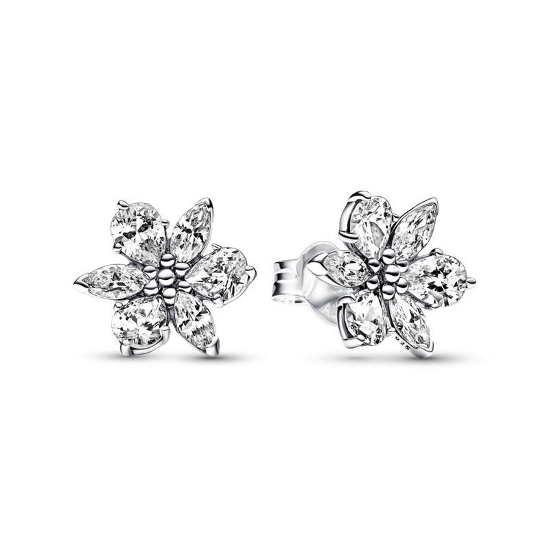

R$ 2.389,00
ou 10x de R$ 238,90
DESCRIÇÃO DO PRODUTO
Inspire-se com as belíssimas formas da natureza. O Brinco de Prata Pequeno Riqueza Botânica Brilhante representa flores e folhas prensadas. Esse par de brincos petit ostenta um aglomerado de pedras alternadas nas lapidações gota e marquise, criando um formato elegante. Um conjunto de microcontas no centro de cada brinco gera o toque final. Use-os como uma peça de destaque sozinhos ou combine-os com outro item brilhante inspirado na natureza para obter um look marcante.